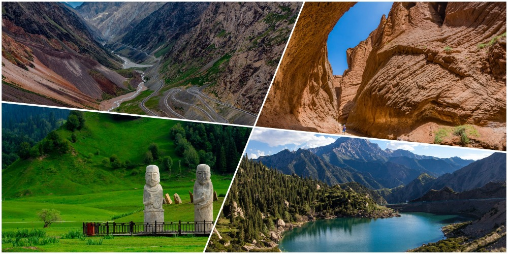
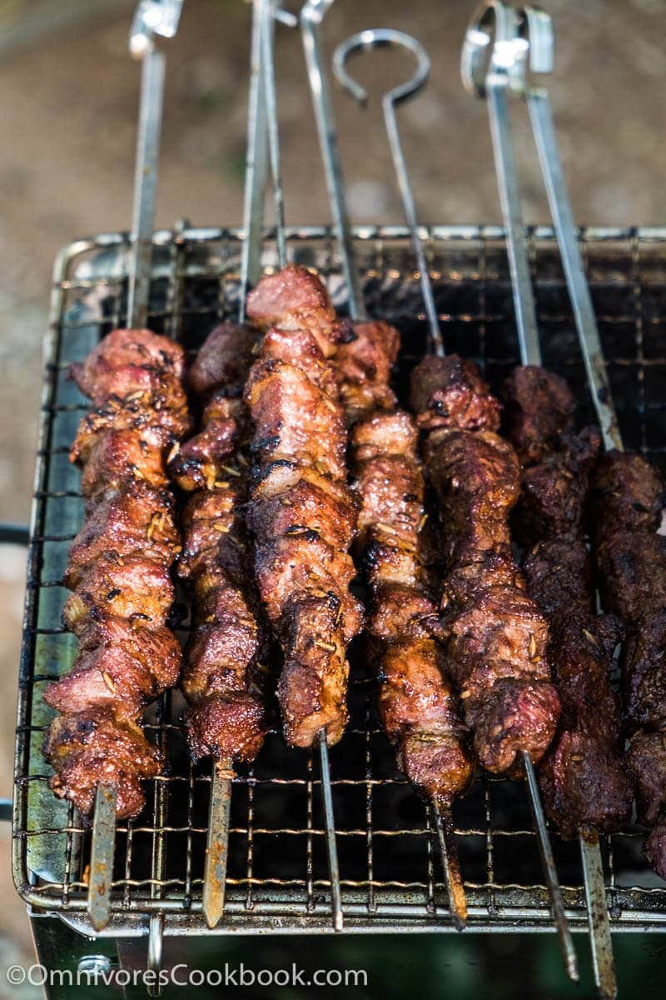
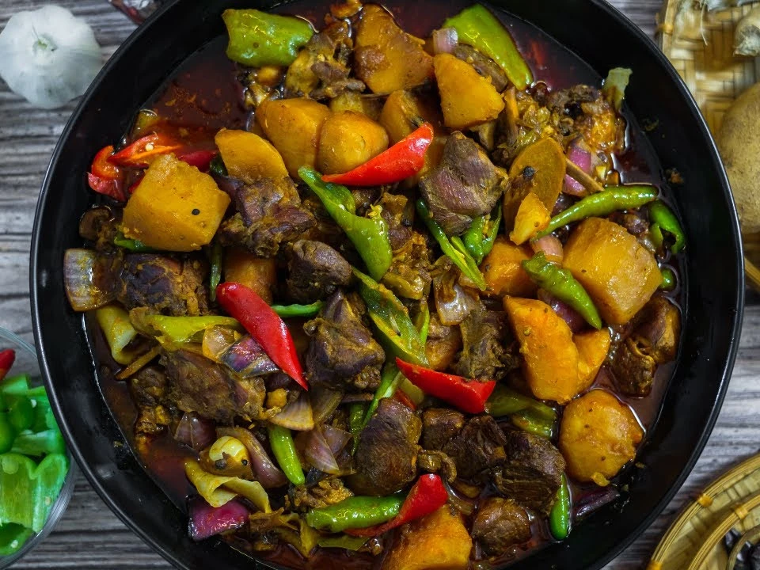
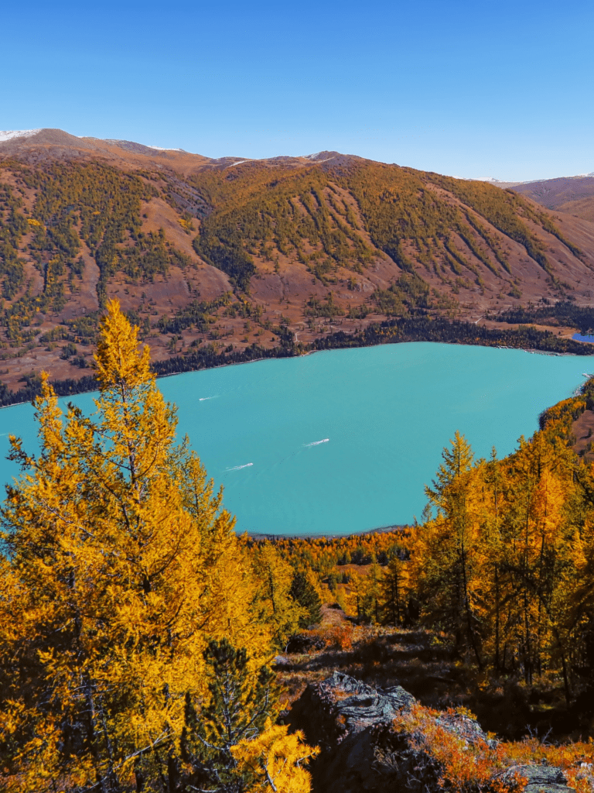

Blue Sky Vacation
Northern Xinjiang Odyssey
Kanas, Hemu, Sayram Lake and the Duku Highway — the last frontier of China.
Kanas, Hemu, Sayram Lake and the Duku Highway — the last frontier of China.




| Departure | Tour fare (with flight) | Ground fare (no flight) | Single supp. |
|---|---|---|---|
| 27 Aug – 6 Sep | RM8,999 | RM7,100 | RM2,300 |
| 28 Aug – 7 Sep | RM9,399 | RM7,100 | RM2,300 |
| 1 – 11 Sep | RM8,999 | RM7,100 | RM2,300 |
| 3 – 13 Sep | RM8,999 | RM7,100 | RM2,300 |
| 4 – 14 Sep | RM8,999 | RM7,100 | RM2,300 |
| 5 – 15 Sep | RM8,999 | RM7,100 | RM2,300 |
| 6 – 16 Sep | RM8,999 | RM7,100 | RM2,300 |
| 7 – 17 Sep | RM8,999 | RM7,100 | RM2,300 |
| 12 – 22 Sep | RM9,399 | RM7,100 | RM2,300 |
| 13 – 23 Sep | RM9,399 | RM7,100 | RM2,300 |
| 14 – 24 Sep | RM9,399 | RM7,100 | RM2,300 |
| 15 – 25 Sep | RM9,399 | RM7,100 | RM2,300 |
| 17 – 27 Sep | RM9,399 | RM7,100 | RM2,300 |
| 18 – 28 Sep | RM9,399 | RM7,100 | RM2,300 |
| 8 – 18 Oct · train | RM8,599 | RM6,600 | RM2,000 |
| 9 – 19 Oct · train | RM8,599 | RM6,600 | RM2,000 |
| 10 – 20 Oct · train | RM8,599 | RM6,600 | RM2,000 |
| Departure | Tour fare (with flight) | Ground fare (no flight) | Single supp. |
|---|---|---|---|
| 2 – 12 Sep | RM12,499 | RM8,800 | RM2,890 |
| 3 – 13 Sep | RM12,499 | RM8,800 | RM2,890 |
| 4 – 14 Sep | RM12,499 | RM8,800 | RM2,890 |
| 6 – 16 Sep | RM12,499 | RM8,800 | RM2,890 |
| 7 – 17 Sep | RM12,499 | RM8,800 | RM2,890 |
| 8 – 18 Sep | RM12,499 | RM8,800 | RM2,890 |
| 14 – 24 Sep | RM12,499 | RM8,800 | RM2,890 |
| 15 – 25 Sep | RM12,499 | RM8,800 | RM2,890 |
| 17 – 27 Sep | RM12,499 | RM8,800 | RM2,890 |
| 18 – 28 Sep | RM12,499 | RM8,800 | RM2,890 |
| 8 – 18 Oct | RM12,499 | RM8,800 | RM2,890 |
| 9 – 19 Oct | RM12,499 | RM8,800 | RM2,890 |
| 10 – 20 Oct | RM12,499 | RM8,800 | RM2,890 |
| Departure | Tour fare (with flight) | Ground fare (no flight) | Single supp. |
|---|---|---|---|
| 20 – 28 Nov | RM9,299 | RM7,599 | RM1,670 |
| 27 Nov – 5 Dec | RM9,299 | RM7,599 | RM1,670 |
| 5 – 13 Dec | RM9,299 | RM7,599 | RM1,670 |
| 18 – 26 Dec | RM9,299 | RM7,599 | RM1,670 |
| 8 – 16 Jan | RM9,299 | RM7,599 | RM1,670 |
| 15 – 23 Jan | RM9,299 | RM7,599 | RM1,670 |
| 14 – 22 Feb | RM9,299 | RM7,599 | RM1,670 |
| 22 Feb – 2 Mar | RM9,299 | RM7,599 | RM1,670 |
This tour departs Kuala Lumpur, not Kota Kinabalu. Ürümqi runs two time zones ahead of Malaysia on the clock but keeps local daylight hours, so mornings start late and evenings run long. Tours are conducted in Mandarin. Download Alipay or WeChat Pay and link a card before you travel; cash in CNY works everywhere. The Duku Highway section is seasonal (Jun–Sep) and may be replaced by high-speed rail.
Tell us your season and group size. We'll recommend Classic, Elite or Winter, and confirm pricing.